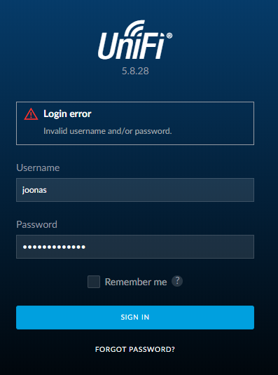
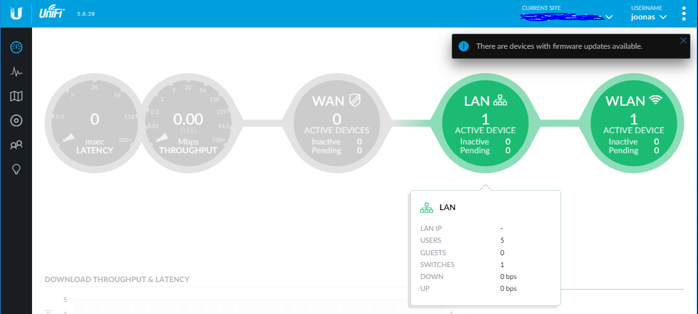

I forgot my password to my Unifi controller

Backstory
Recently I purchased some Unifi gear, and I installed the controller software mainly as a test, and thus I did not immediately save the username and password in a password manager but instead I probably wrote it down in Windows Notepad, and Windows 10 being a total dick, just one day restarted losing what I had in notepad.
Some time passed, and I forgot not only the password, but also the username. Then I realized that once the Unifi gear is adopted to the controller, it would require some effort to re-adopt and configure the gear into a new instance of the controller - so I was left scratching my head as to how to break in.
Lesson learned: recognize the fact that a “test installation” might be promoted to production.
Here’s a small explorative story of my thought process and how I managed to “break in” back to my Unifi controller. Quotes, because it’s not much hacking when I had root access to to the VM the controller was running in.
It’s also a side story of the powerful help in MongoDB that helped me go from zero to doing something meaningful in a really short time.
The objective: find out the username and reset the password.
First try: “Forgot password?” dialog
My first instinct was to try the “Forgot password?” feature. I gave the correct email, but the password reset link never came. I guess I should have configured some SMTP defails when I set up the controller..
Second try: explore the filesystem
I didn’t find the user account details by exploring the Unifi controller’s saved files in the filesystem.
Third try: explore the database
I am running the controller as a Docker image from the ever awesome Jessfraz.
After entering the container, $ mongo (the CLI for MongoDB) didn’t exist, so we need to install it:
$ apt search mongo
mongodb-org-server/now 3.4.17 amd64 [installed,local]
MongoDB database server
I should be able to see more MongoDB related stuff, so because they’re missing we must refresh package index. Also, from the above package we know we probably should search with “mongodb-org”:
$ apt update
$ apt search mongodb-org
mongodb-org/xenial 3.4.17 amd64
MongoDB open source document-oriented database system (metapackage)
mongodb-org-mongos/xenial 3.4.17 amd64
MongoDB sharded cluster query router
mongodb-org-server/xenial,now 3.4.17 amd64 [installed]
MongoDB database server
mongodb-org-shell/xenial 3.4.17 amd64
MongoDB shell client
mongodb-org-tools/xenial 3.4.17 amd64
MongoDB tools
# great, so it's mongodb-org-shell
$ apt install mongodb-org-shell
Running $ mongo now works but it didn’t manage to connect to the default TCP port.
What port is it running in?
$ netstat -na | grep mongo
unix 2 [ ACC ] STREAM LISTENING 22071 /usr/lib/unifi/run/mongodb-27117.sock
Oh it listens only to a Unix socket, so let’s try it:
$ mongo --host /usr/lib/unifi/run/mongodb-27117.sock
MongoDB shell version v3.4.17
connecting to: mongodb://%2Fusr%2Flib%2Funifi%2Frun%2Fmongodb-27117.sock/
MongoDB server version: 3.4.17
Welcome to the MongoDB shell.
For interactive help, type "help".
Awesome, we’re in! Knowing nothing about MongoDB, I appreciate the hint of starting with help:
> help
db.help() help on db methods
db.mycoll.help() help on collection methods
sh.help() sharding helpers
rs.help() replica set helpers
help admin administrative help
help connect connecting to a db help
help keys key shortcuts
help misc misc things to know
help mr mapreduce
show dbs show database names
show collections show collections in current database
show users show users in current database
show profile show most recent system.profile entries with time >= 1ms
show logs show the accessible logger names
show log [name] prints out the last segment of log in memory, 'global' is default
use <db_name> set current database
db.foo.find() list objects in collection foo
db.foo.find( { a : 1 } ) list objects in foo where a == 1
it result of the last line evaluated; use to further iterate
DBQuery.shellBatchSize = x set default number of items to display on shell
exit quit the mongo shell
Ok so we can start by listing databases:
> show dbs
ace 0.003GB
ace_stat 0.006GB
admin 0.000GB
local 0.000GB
The DBs admin and local are probably some MongoDB system stuff, so we’re left with ace and ace_stat.
The latter is probably related to statistics storage, so ace is our best bet.
Again, the help command also told us how to “enter” a database:
> use ace
switched to db ace
The help command also taught us how to list “tables” (collections in MongoDB terminology):
> show collections
account
admin
alarm
broadcastgroup
dashboard
device
...
scheduletask
setting
site
stat
tag
task
user
usergroup
verification
virtualdevice
voucher
wall
wlanconf
wlangroup
We’re probably interested either in admin, account or the user collection.
Conveniently, the same top-level help also taught us how to list objects in the collection:
> db.user.find()
{ "_id" : ObjectId("5b94d704c8df8b0001ab6b5a"), "mac" : "08:00:27:...", "site_id" : "5b94d698c8df...", "oui" : "PcsSyste", "is_guest" : false, "first_seen" : NumberLong(1536481028), "last_seen" : NumberLong(1538481428), "is_wired" : true, "name" : "...", "usergroup_id" : "", "noted" : true, "hostname" : "..." }
much more rows like above... (some data was masked for my privacy)
Ok those are devices in my network, so that’s the wrong collection. Next we’ll try admin:
> db.admin.find()
{ "_id" : ObjectId("5b94d6d1c8df8b0001ab6b4e"), "email" : "...", "last_site_name" : "default", "name" : "joonas", "time_created" : NumberLong(1536480977), "x_shadow" : "$6$dCFzb1Vb$D2AV2BnF2.hbLY3tMD7w4c5Xbjz/..." }
(again, some data masked with dots for privacy)
Bingo! And don’t bother with even the cut portion of my password hash, because I never use the same password twice.
The password is stored in field x_shadow. The hash looks familiar but I don’t know it
from the top of my head. A quick Bing search (jk) for $6$ hash landed me
here, so it’s sha-512. After installing
$ mkpasswd (see the previous link for how):
$ mkpasswd -m sha-512 test
$6$5xoqSMQ32wdPR$RDcGgk2Jd6LvkkzCSaJJ0s3o73IW.ikMIzSusqOwL3G908XLG4OGjCfOewePNJEYAbiFyKS9p0hoPBTvxMvr61
Structurally the hashes look the same, so now all we have to do is plug a new hash in to the database to effectively reset the password. How to update an object in a collection?
The help command had this row:
db.mycoll.help() help on collection methods
So, running this:
> db.admin.help()
...
db.admin.update( query, object[, upsert_bool, multi_bool] ) - instead of two flags, you can pass an object with fields: upsert, multi
db.admin.updateOne( filter, update, <optional params> ) - update the first matching document, optional parameters are: upsert, w, wtimeout, j
...
The two above functions look like something we can work with. Let’s just try something:
> db.admin.updateOne({name: 'joonas'}, {x_shadow: '$6$5xoqSMQ32wdPR$RDcGgk2Jd6LvkkzCSaJJ0s3o73IW.ikMIzSusqOwL3G908XLG4OGjCfOewePNJEYAbiFyKS9p0hoPBTvxMvr61'})
E QUERY [thread1] Error: the update operation document must contain atomic operators
Ok we’re doing something wrong here, so opening the
docs for updateOne,
we probably need to use $eq as query operator and $set as update operator:
> db.admin.updateOne({$eq:{name: "joonas"}}, {$set:{x_shadow: "$6$5xoqSMQ32wdPR$RDcGgk2Jd6LvkkzCSaJJ0s3o73IW.ikMIzSusqOwL3G908XLG4OGjCfOewePNJEYAbiFyKS9p0hoPBTvxMvr61"}})
WriteError({
"index" : 0,
"code" : 2,
"errmsg" : "unknown top level operator: $eq",
"op" : {
"q" : {
"$eq" : {
"name" : "joonas"
}
},
"u" : {
"$set" : {
"x_shadow" : "$6$5xoqSMQ32wdPR$RDcGgk2Jd6LvkkzCSaJJ0s3o73IW.ikMIzSusqOwL3G908XLG4OGjCfOewePNJEYAbiFyKS9p0hoPBTvxMvr61"
}
},
"multi" : false,
"upsert" : false
}
})
The error message says unknown top level operator: $eq, that is strange because $eq is
the correct operator so it’s not immediately clear what I did wrong because the error I
made should have resulted in error message telling me that $eq is an unknown field, or
that name is an unknown operator..
Looking at more docs, the field name should be before the operator in the query part, but
the update part was correct ($set operator as outer, and field name as inner):
> db.admin.updateOne({name:{$eq: "joonas"}}, {$set:{x_shadow: "$6$5xoqSMQ32wdPR$RDcGgk2Jd6LvkkzCSaJJ0s3o73IW.ikMIzSusqOwL3G908XLG4OGjCfOewePNJEYAbiFyKS9p0hoPBTvxMvr61"}})
{ "acknowledged" : true, "matchedCount" : 1, "modifiedCount" : 1 }
Now, trying to log in again, SUCCESS:

Awesome, we just reset the password by poking at the internals. :)

Thanks for reading! 😍
If you like my writing, consider following me on Twitter.
Stay updated on my blog posts & projects - sign up for
my newsletter. 🚀
No spam, unsubscribe any time.
RSS also available.